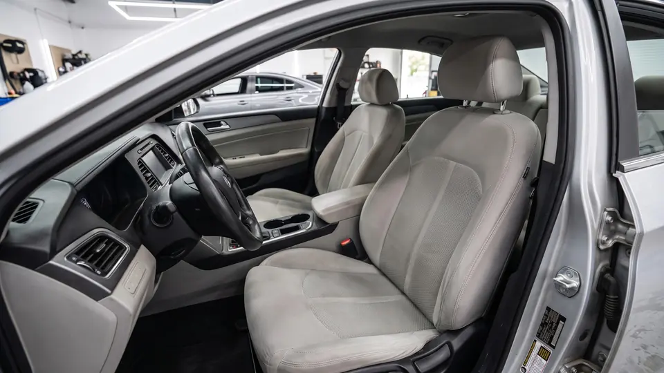
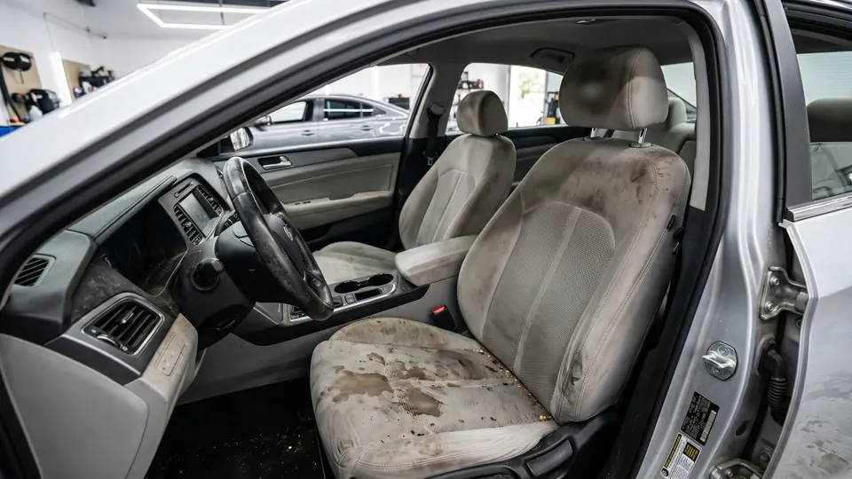

Химчистка салона
в Санкт-Петербурге
Кожа, ткань, потолок и ковры. Салон снова свежий.
Записаться


Было.
Стало.
Три примера. Потяните разделитель или выберите пример ниже.


Водительское сиденье
Пятна от кофе и следы пота ушли из ткани.
Когда нужна
химчистка.
- Кожа блестит от жира
- Пятна на ткани и коврах
- Салон потерял свежесть
Результат.
Сравните сами.
Реальная работа нашей студии. Потяните разделитель.

Частые
вопросы.
Чем отличается от уборки?
Уборка чистит поверхности. Химчистка очищает сами материалы салона.
Сколько стоит?
Зависит от машины и её состояния. Перезвоним и назовём точную цену.
Другие
услуги.
Оставьте номер.
Остальное сделаем мы.
Перезвоним, назовём цену и подберём удобное время.
Спасибо!
Скоро перезвоним.